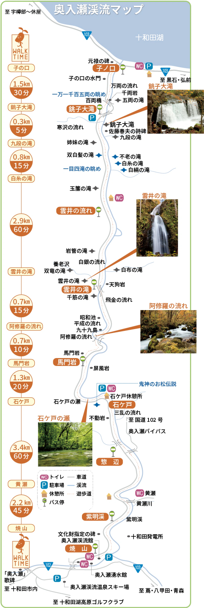

奥入瀬渓流の歩き方

[徒歩]
焼山～子ノ口（全区間） 約5時間 約14km
石ケ戸～子ノ口（見所区間） 約2時間半 約9km
令和5年度の活動内容
十和田湖自然ガイドクラブ
十和田湖に宿泊される観光客の皆さまに対し、湖畔の日々変化する自然や乙女の像、十和田神社などを地元在住のガイドが、毎日早朝1時間案内しています。観光客の皆さまとともに自然の美しさを感動し合い、先人の残した文化遺産を偲び、国立公園のすばらしさや保護意識を高めたいと考えています。
〒018-5501 十和田市大字奥瀬字十和田486番地（吉崎方）
電話:090-5181-7658 FAX:0176-75-1860
| ●案内範囲 | / |
十和田湖畔休屋周辺（約1時間） |
| ●案内期間 | / |
４月下旬～11月初旬（火水定休日） |
| ●費用 | / |
500円 |
| ●申込み | / |
事前受付不要 ※ 月曜日のみ集合場所は「ホテル十和田荘」前になります ※ 休屋早朝ガイド以外でも、十和田湖・奥入瀬でのガイド派遣等に応じています（有料） |
ガイドと一緒にもっと楽しむ奥入瀬渓流
天然の自然博物館を、ガイドと一緒にもっと体験しませんか。ガイドツアーやアクティビティ等、詳しくはパンフレットをご覧ください。